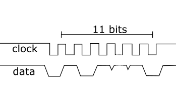

Hardware & Software
Hardware
Linux & Hardware
Hardware
Not much there
Built in June 2016
I built a huge 2 x 0.5m game-pad which was used at student events in Aalto University. One of the challenges I faced was that no manufacturer makes buttons with a diameter over 10cm. I really couldn't find any on the internet, so they had to be made from scratch. Another aspect that required some thought was that the controller needed to withstand heavy use (drunken gamers). The electronics were mostly just a rewired gamepad, although some work was needed in order to make the solution robust.
The button is made from a freezer-box for food. The boxes have been sprayed from the inside with color spray.
An elastic rubber band restores the button back up.
Under the button momentary switches register if the button is pushed. The switches reside on a metal plate.
The games played on the controller vary from snake to tetris and further to harder games like Super Mario. All in all the controller was a great success and required only minimal maintenance. As you can see, the userbase is quite rough on the controller, so somea ctual effort was neede to make it last. In the above image two buttons have been covered because they vere not used in that particular game.
Built in February 2011
I live classic arcade games. And to play them with the right feel, an emulator is just not enough... So I made an arcade cabinet. The challenges i faced were related to communicating between the computer and the arduino for the control panel. At the time, arduino did not support acting as a USB-HID device. I decided to make the control panel myself. After researching some alternatives I decided to make the panel with an arduino and arcade buttons instead of ordering a complete set.
The real challenge was to get the arduino to talk to the computer. At the time, arduino did not support acting as a USB-HID device, so i ended up connecting the arduino to the computer via the keyboard PS/2-interface.

Implementing the PS/2 protocol was not trivial. An opensource library did exist, but i noticed timing issues with it, so I corrected them and got the arduino to emulate a standard keyboard on the computer. The timing issues might be related to the clock frequency of the arduino.
Bult in December 2011
I found myself constantly needing more drive space, so I built my own data-server. This was when cloud services were still emerging. I made a custom case from an old computer. The new case had air intake and outtake in the front so it could sit in a shelf without heating up. The server had four 2-terabyte drives. The drives were mirrored in raid0 so that two were clone drives.
As the server software i first chose FreeNAS, but i quickly found it unsufficient for my needs. I switched to Ubuntu server, but decided to keep the ZFS-filesystem. ZFS is possibly the most awesome filesystem you can have. It stands for Zettabyte File System. During the process i unarguably learned some valueable knowledge about backups and server installation.
Built in June 2014
As part of a independent research team at Aalto University, we used genetic engineering to perform synthetic biology experiments. Our work was novel and had not been performed in Finland independently. We developed an E. Coli bacteria strand that reacted to blue light and prouced GFP. Simply put, we programmed bacteria to react to light. In order to perform our experiments we needed a standardized isolated light source that could be used for a bacteria culture in a standard microtiter-plate (the black plate with holes in the picture).
I developed this Led Rig in order to be able to control the amount of light the bacteria received.
In order to be able to relate the bacteria response to the LED specifications the LED:s were measured with a spectrophotomoter. Did you expect to see something? The LED:s were measured in a darkroom.
The Led rig was a success and essential for our research. You can read more of our project on our wiki-page.